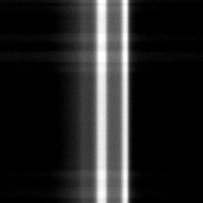

Tonight
--
Reading the sky…
Darkness
Best nights ahead PROnext 15 nights
Planets tonight
Moon
Listened-to star overheadBreakthrough Listen
Coming up
Drag to line the labels up with the real sky · pinch to match your camera's zoom
Breakthrough Listen · Green Bank
Tuning…
Listening
Tap here to choose a different simulation
Choose a simulation
Replays recreate real moments; simulations show how the search works. Everything below is real archive data.
Above you now
★ Favourites PROyour own list
Our radio bubble
Real recordingGBT · HIP 35136 · 2016

How many are out there?Drake equation
Target list and observation dates: Breakthrough Listen public archive index (45,815 GBT observations, 2016–2018). Distances: HYG star database.
Case files
Signals
Every time the sky seemed to answer, and what it turned out to be.
MoTuWeThFrSaSu
MeteorsEclipsePlanetsListened